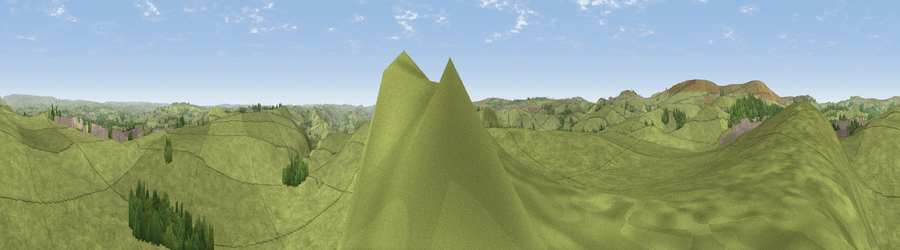

Viewpoint near Hollinsclough
#16379 in England · top 23% of its area beats it · near HollinscloughThe view, rendered

A 360° render of this exact spot computed from the terrain model, tree cover and land cover — summer colours, afternoon light, calibrated against photographs of famous viewpoints. Real trees, hedges and buildings will differ in detail.
The panorama
Grey silhouette: terrain skyline in each direction (720 bearings, Earth curvature and refraction included). Dashed green: skyline with trees (+15 m) and buildings (+8 m) as obstacles. Blue strip: how far the ground is visible on each bearing.
Where the view opens
Wedge length = distance to the farthest visible ground on that bearing (vegetation-aware). Rings at 10, 25 and 50 km.
What fills the view
95% grassland · 4% woodland ·
Angular shares of the visible panorama (visual magnitude), not map area. Landscape diversity 0.09 (0–1 Shannon).
Key numbers
More beautiful places nearby
The staircase of upgrades: each row has a higher view potential than everything closer. Driving times are estimates from straight-line distance, calibrated against real road routing — check an actual route before setting out.
| Place | Direction | Drive | Score |
|---|---|---|---|
| Hind Low | E · 2 km | ~5 min | 56.8 |
| Fox Low | N · 2 km | ~6 min | 57.9 |
| Axe Edge | W · 3 km | ~7 min | 69.7 |
| Viewpoint near Meerbrook | SW · 8 km | ~16 min | 73.5 |
| Viewpoint near Timbersbrook | WSW · 17 km | ~29 min | 74.4 |
| Tissington Hill | SSE · 18 km | ~32 min | 75.5 |
| Viewpoint near Mow Cop | WSW · 23 km | ~38 min | 78.9 |
| Viewpoint near Mow Cop | WSW · 23 km | ~39 min | 80.2 |
53.21645, -1.90749 · source: screening · position refined by local search. Computed location — check access rights before visiting.